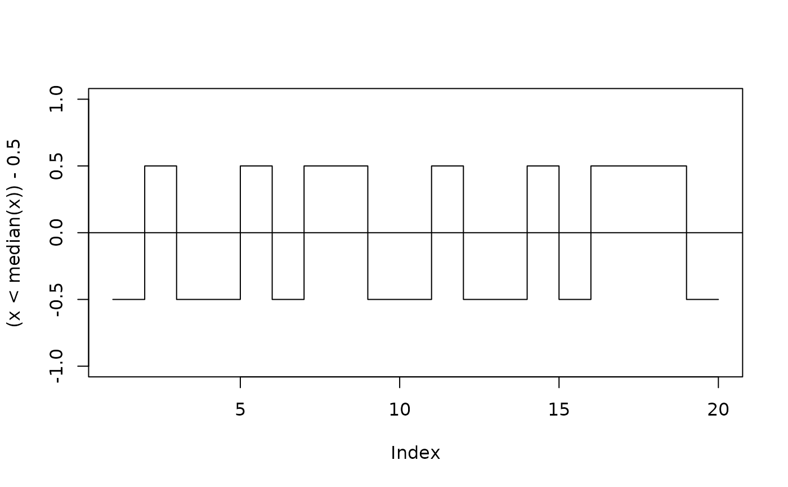

RunsTest.RdPerforms a test whether the elements of x are serially independent - say, whether
they occur in a random order - by counting how many runs there are above and below a threshold.
If y is supplied a two sample Wald-Wolfowitz-Test testing the equality of two distributions against general alternatives will be computed.
RunsTest(x, ...) # S3 method for default RunsTest(x, y = NULL, alternative = c("two.sided", "less", "greater"), exact = NULL, correct = TRUE, na.rm = FALSE, ...) # S3 method for formula RunsTest(formula, data, subset, na.action, ...)
| x | a dichotomous vector of data values or a (non-empty) numeric vector of data values. |
|---|---|
| y | an optional (non-empty) numeric vector of data values. |
| formula | a formula of the form |
| data | an optional matrix or data frame (or similar: see |
| subset | an optional vector specifying a subset of observations to be used. |
| na.action | a function which indicates what should happen when the data contain NAs. Defaults to |
| alternative | a character string specifying the alternative hypothesis, must be one of |
| exact | a logical indicating whether an exact p-value should be computed. By default exact values will be calculated for small vectors with a total length <= 30 and the normal approximation for longer ones. |
| correct | a logical indicating whether to apply continuity correction when computing the test statistic. Default is |
| na.rm | defines if |
| ... | further arguments to be passed to or from methods. |
The runs test for randomness is used to test the hypothesis
that a series of numbers is random. The 2-sample test is known as the Wald-Wolfowitz test.
For a categorical variable, the number of runs correspond to the number of times the category changes, that is,
where \(x_{i}\) belongs to one category and \(x_{i+1}\) belongs to the other. The number of runs is the number of sign changes plus one.
For a numeric variable x containing more than two values, a run is a set of sequential values that are either all above or below a specified cutpoint, typically the median. This is not necessarily the best choice. If another threshold should be used use a code like: RunsTest(x > mean(x)).
The exact distribution of runs and the p-value based on it are described in the manual of SPSS "Exact tests" http://www.sussex.ac.uk/its/pdfs/SPSS_Exact_Tests_21.pdf.
The normal approximation of the runs test is calculated with the expected number of runs under the null $$\mu_r=\frac{2 n_0 n_1}{n_0 + n_1} + 1$$ and its variance $$\sigma_r^2 = \frac{2 n_0 n_1 (2 n_0 n_1 - n_0 - n_1) }{(n_0 + n_1)^2 \cdot (n_0 + n_1 - 1)}$$ as $$\hat{z}=\frac{r - \mu_r + c}{\sigma_r}$$ where \(n_0, n_1\) the number of values below/above the threshold and \(r\) the number of runs.
Setting the continuity correction correct = TRUE will yield the normal approximation as SAS (and SPSS if n < 50) does it, see http://support.sas.com/kb/33/092.html.
The c is set to \(c = 0.5\) if \(r < \frac{2 n_0 n_1}{n_0 + n_1} + 1\)
and to \(c = -0.5\) if \(r > \frac{2 n_0 n_1}{n_0 + n_1} + 1\).
Wald-Wolfowitz with Ties. Ideally there should be no ties in the data used for the Wald-Wolfowitz test. In practice there is no problem with ties within a group, but if ties occur between members of the different groups then there is no unique sequence of observations. For example the data sets A: 10,14,17,19,34 and B: 12,13,17,19,22 can give four possible sequences, with two possible values for r (7 or 9). The "solution" to this is to list every possible combination, and calculate the test statistic for each one. If all test statistics are significant at the chosen level, then one can reject the null hypothesis. If only some are significant, then Siegel (1956) suggests that the average of the P-values is taken. Help for finding all permutations of ties can be found at: https://stackoverflow.com/questions/47565066/all-possible-permutations-in-factor-variable-when-ties-exist-in-r
However this solutions seems quite coarse and in general, the test should not be used if there are more than one or two ties. We have better tests to distinguish between two samples!
A list with the following components.
z, the value of the standardized runs statistic, if not exact p-values are computed.
the number of runs, the total number of zeros (m) and ones (n)
the p-value for the test.
a character string giving the names of the data.
a character string describing the alternative hypothesis.
Wackerly, D., Mendenhall, W. Scheaffer, R. L. (1986) Mathematical Statistics with Applications, 3rd Ed., Duxbury Press, CA.
Wald, A. and Wolfowitz, J. (1940): On a test whether two samples are from the same population, Ann. Math Statist. 11, 147-162.
Siegel, S. (1956) Nonparametric Statistics for the Behavioural Sciences, McGraw-Hill Kogakusha, Tokyo.
Run Length Encoding rle
Andri Signorell <andri@signorell.net>, exact p-values by Detlew Labes <detlewlabes@gmx.de>
# x will be coerced to a dichotomous variable x <- c("S","S", "T", "S", "T","T","T", "S", "T") RunsTest(x)#> #> Runs Test for Randomness #> #> data: x #> runs = 6, m = 4, n = 5, p-value = 0.7619 #> alternative hypothesis: true number of runs is not equal the expected number #>#> #> Runs Test for Randomness #> #> data: x #> runs = 12, m = 12, n = 8, p-value = 0.6332 #> alternative hypothesis: true number of runs is not equal the expected number #> sample estimates: #> median(x) #> 13 #>#> #> Runs Test for Randomness #> #> data: x > median(x) #> runs = 12, m = 12, n = 8, p-value = 0.6332 #> alternative hypothesis: true number of runs is not equal the expected number #>#> #> Runs Test for Randomness #> #> data: x #> z = 0.50859, runs = 53, m = 57, n = 43, p-value = 0.611 #> alternative hypothesis: true number of runs is not equal the expected number #># As you would expect of values from a random number generator, the test fails to reject # the null hypothesis that the data are random. # SPSS example x <- c(31,23,36,43,51,44,12,26,43,75,2,3,15,18,78,24,13,27,86,61,13,7,6,8) RunsTest(x, exact=TRUE) # exact probability#> #> Runs Test for Randomness #> #> data: x #> runs = 10, m = 12, n = 12, p-value = 0.3009 #> alternative hypothesis: true number of runs is not equal the expected number #> sample estimates: #> median(x) #> 25 #>RunsTest(x, exact=FALSE) # normal approximation#> #> Runs Test for Randomness #> #> data: x #> z = -1.0436, runs = 10, m = 12, n = 12, p-value = 0.2967 #> alternative hypothesis: true number of runs is not equal the expected number #> sample estimates: #> median(x) #> 25 #>#> #> Runs Test for Randomness #> #> data: x #> runs = 3, m = 4, n = 6, p-value = 0.07143 #> alternative hypothesis: true number of runs is not equal the expected number #>RunsTest(x, exact=FALSE)#> #> Runs Test for Randomness #> #> data: x #> z = -1.6156, runs = 3, m = 4, n = 6, p-value = 0.1062 #> alternative hypothesis: true number of runs is not equal the expected number #># if y is not NULL, the Wald-Wolfowitz-Test will be performed A <- c(35,44,39,50,48,29,60,75,49,66) B <- c(17,23,13,24,33,21,18,16,32) RunsTest(A, B, exact=TRUE)#> #> Wald-Wolfowitz Runs Test #> #> data: A and B #> runs = 4, m = 10, n = 9, p-value = 0.003139 #> alternative hypothesis: true number of runs is not equal the expected number #>RunsTest(A, B, exact=FALSE)#> #> Wald-Wolfowitz Runs Test #> #> data: A and B #> z = -2.8287, runs = 4, m = 10, n = 9, p-value = 0.004674 #> alternative hypothesis: true number of runs is not equal the expected number #>